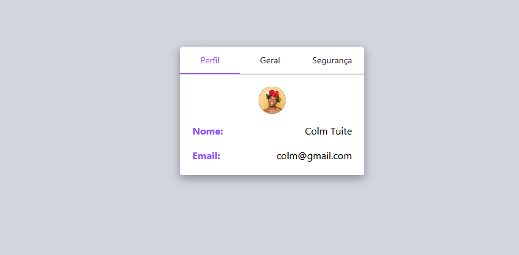
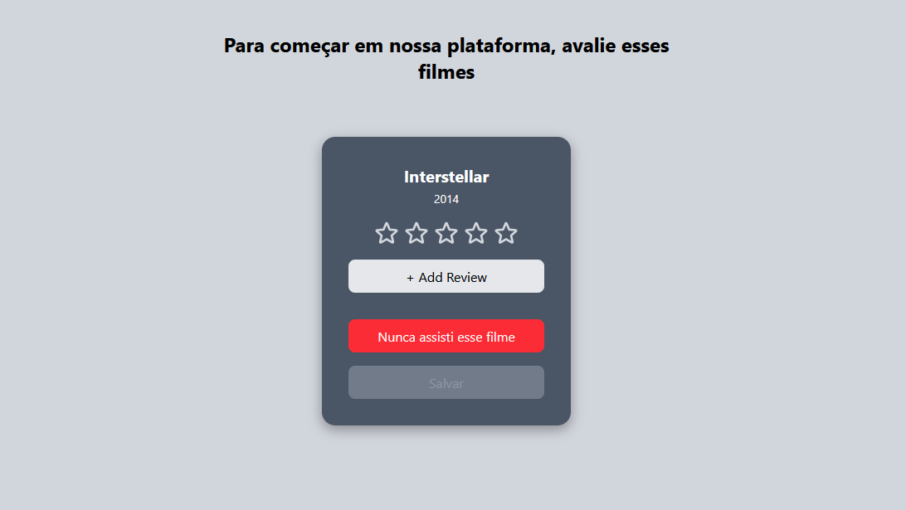
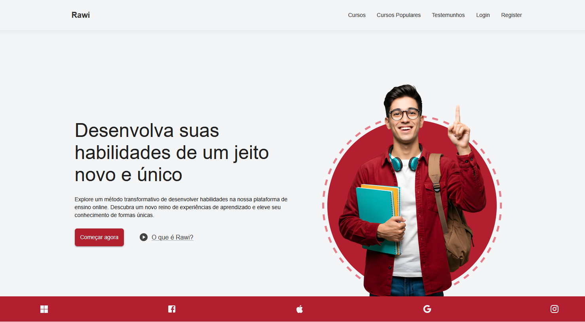
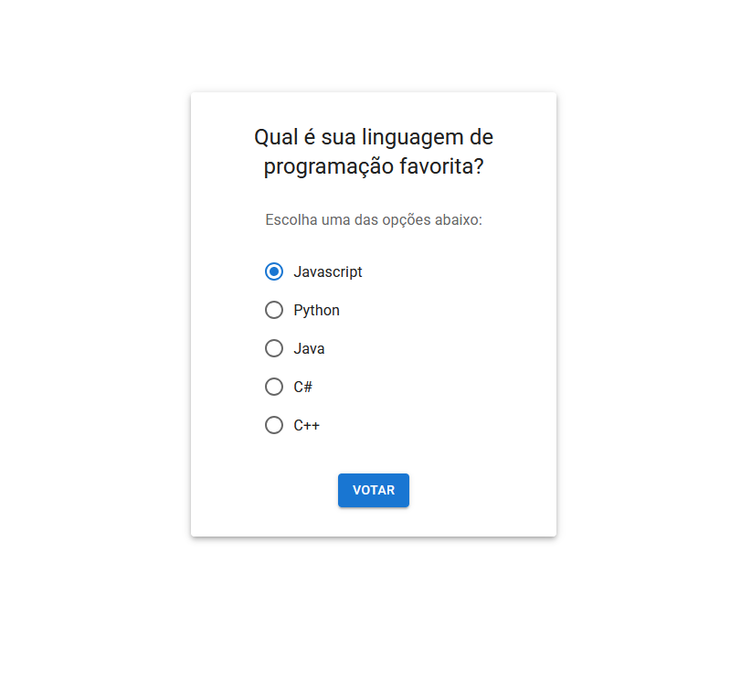
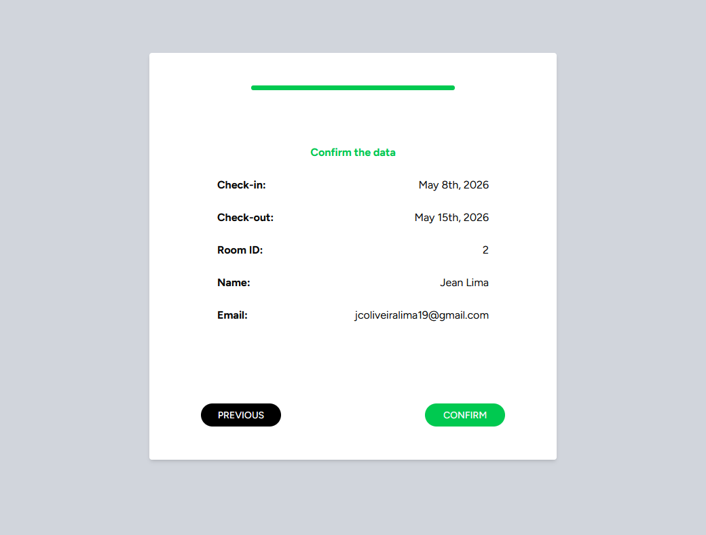
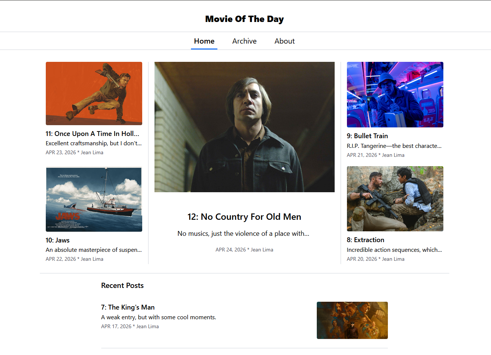
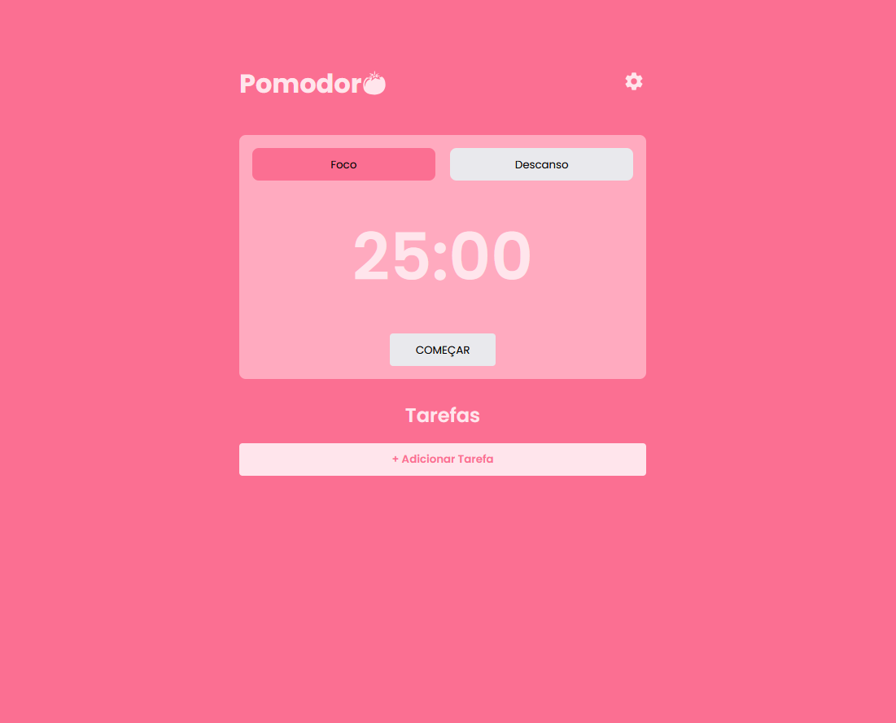
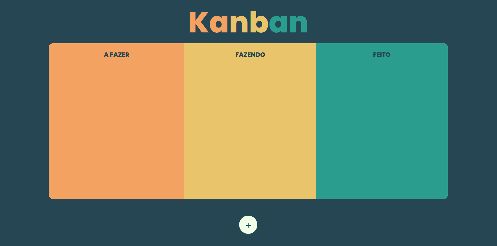

Olá, eu sou o Jean Lima
e sou
</desenvolvedor frontend>
Desenvolvedor front-end focado em criar soluções web modernas. Tenho formação concluída em ADS e em GTI e estou ampliando meu conhecimento com uma graduação em andamento em Engenharia de Software.
CONHECIMENTO
SOBRE MIM.
Um desenvolvedor frontend apaixonado.
Movido por uma paixão de longa data pela tecnologia, construí uma base sólida em Análise e Desenvolvimento de Sistemas (ETEC) e finalizei meu tecnólogo em Gestão da Tecnologia da Informação (FATEC) para obter uma visão estratégica de negócios. Atualmente, aprofundo minha expertise técnica na graduação em Engenharia de Software na INFNET (EAD, 3° de 8 semestres). Essa jornada contínua me capacita a criar interfaces que não são apenas intuitivas e visualmente atraentes, mas também bem-estruturadas, escaláveis e alinhadas aos objetivos de negócio de cada projeto.
PROJETOS.
-

Painel de Configurações
Um painel de configurações genérico acessível. Com foco na prática do Radix UI.
- REACT
- VITE
- TAILWIND
- RADIX UI
-

Avaliador de Filmes
Um projeto React de avaliação de filmes para um recomendador de filmes. Onde o usuário recebe uma série de filmes e avalia para definir o gosto inicial dele. Foco na aplicação do React Aria Components com Tailwind.
- REACT
- VITE
- TAILWNID
- REACT ARIA COMPONENTS
-

Plataforma de Cursos
Um site de uma plataforma de cursos de tecnologia. Foco na aplicação do Material UI.
- REACT
- VITE
- MATERIAL UI
-

Sistema de votação simples
Um sistema de votação simples onde o usuário escolhe a linguagem de programação favorita e vê um gráfico com as mais votadas. Foco na aplicação do Redux e Material UI.
- REACT
- VITE
- REDUX
- MATERIAL UI
-

Formulário de Reservas
Um formulário de reserva de quarto multi-etapas. Foco na aplicação do Zustand e Shadcn.
- REACT
- VITE
- TAILWIND
- ZUSTAND
- SHADCN
-

Movie Of The Day
Um blog de reviews de filmes em inglês simples. Foco na aplicação do React Router e Tailwind.
- REACT
- VITE
- TAILWIND
-

Método Pomodoro
Um site para execução do método pomodoro, com tempo de foco e descanso personalizáveis e uma lista de tarefas salva na localStorage. Foco na aplicação dos hooks useState, useEffect, useRef e useContext.
- REACT
- VITE
-

Método Kanban
Um projeto com um quadro do método kanban funcional. Com adição, edição e exclusão dos cards com localStorage.
- HTML
- CSS
- JAVASCRIPT
FORMAÇÃO.
-
Bacharelado: Engenharia de Software
Instituto INFNET (EAD)
01/2025 - 12/2028
Em Curso -
Técnologo: Gestão de Tecnologia da Informação
FATEC Itaquaquecetuba
01/2023 - 12/2025
Concluído -
Ensino Médio Técnico - Análise e Desenvolvimento de Sistemas
ETEC Itaquaquecetuba
01/2020 - 12/2022
Concluído
Experiência.
-
Desenvolvedor Front-end (Projetos Pessoais & Acadêmicos)
Atualmente, dedico minha rotina ao desenvolvimento de aplicações web completas, simulando desafios reais do mercado. Tenho experiência prática na construção de Single Page Applications responsivas, consumo de APIs RESTful, gerenciamento de estado global e versionamento de código, atuando diariamente como um desenvolvedor ativo.